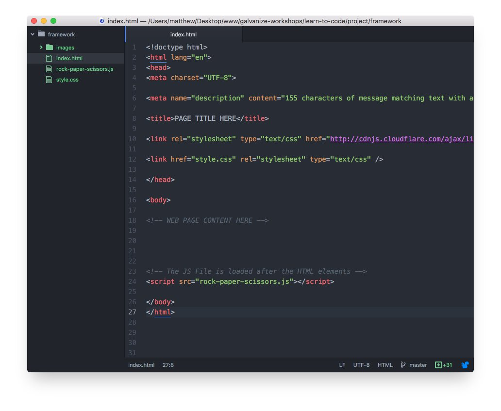
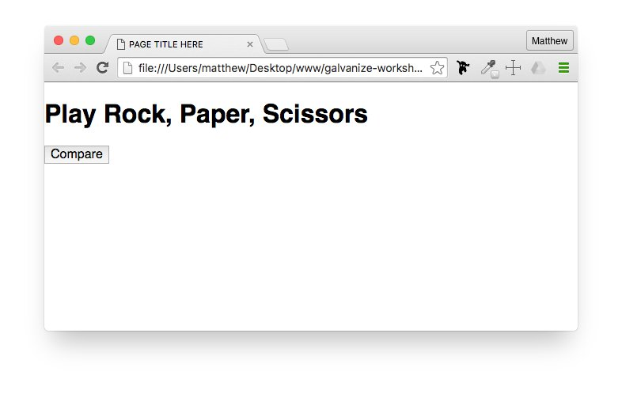
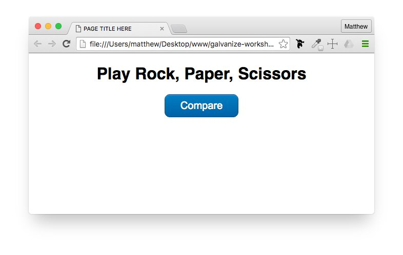
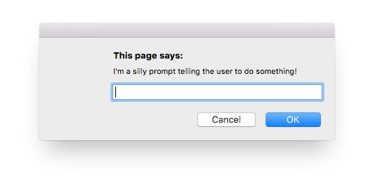
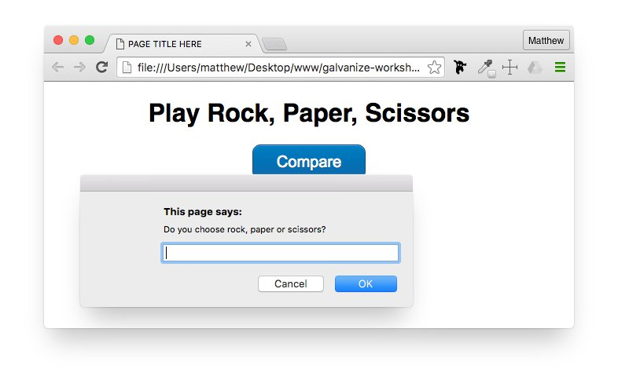

Building our first JS app
With the skills covered today, you'll create your own project:
To Build a “Rock, Paper, Scissors” Application
See the Pen Rock, Paper, Scissors by Matthew Leach (@shoutmatt) on CodePen.
As we start building our first web page application, it is important to start with the necessary web files. For this project, we'll be working with these files:
Rather than starting from an empty page each project, most web developers work with frameworks that have all the necessary and common page structures already built so they can jump right into the production of their pages.
Once you have the Framework downloaded, upzip the files and drag the entire framework folder into your code editor so you have access to all of the files.

Take a moment to review:
Take a quick moment to add in a unique page title to the index.html page and a description for what this project is.
<meta name="description" content="Flexing my Javascript skills using variables, functions, and conditions building a Rock, Paper, Scissors Game."> <title>Rock, Paper, Scissors Game</title>
We are starting with a really simple web page presentation with just a title and a button the user will need to click onto. Of course, you can always improve the visual presentation of this game later.
Add this code within the body of your HTML page:
<h1>Play Rock, Paper, Scissors</h1> <p><button class="fancy-btn" onclick="compare(userChoice, computerChoice);">Compare</button></p>
This button is going to call a function that we still need to write called compare. We'll have to get the user's choice and the computer's choice first, but once we do, the user will be able to click this button to test who wins.
Feel free to save your document and view the index.html page within a web browser. It should look like this:

The title and the button we have is ok, but a little CSS style can improve this presentation. Of course, you can always improve the visual presentation of this game later.
Add this code within the CSS page:
h1,
p {
text-align: center;
}
.fancy-btn {
background: linear-gradient(to bottom, #007dc1 5%, #0061a7 100%);
background-color: #007dc1;
border-radius: 10px;
color: #ffffff;
font-family: Arial;
font-size: 20px;
padding: 10px 30px;
border: 1px solid #124d77;
text-shadow: 0px 1px 0px #154682;
box-shadow: inset 0px 1px 0px 0px #54a3f7;
text-decoration: none;
outline: none;
cursor: pointer;
}
.fancy-btn:hover {
background: linear-gradient(to bottom, #0061a7 5%, #007dc1 100%);
}
Feel free to save your documents and view the index.html page again within a web browser. It should look like this:

As we get started writing the actual code. The easiest way to get input from a user is using a prompt.

A prompt is the pop-up box that allows a user to enter content. In this case, we need the users to select 'rock', 'paper', or 'scissors'.
Add this code within the JavaScript File:
var userChoice = prompt("Do you choose rock, paper or scissors?");
This line creates a variable called userChoice and holds the value that the user will type into the prompt.
Feel free to save your documents and view the index.html page again within a web browser. It should look like this:

Question: What are the pros vs cons of using a prompt to get user input?
We can not simply ask the computer to make a choice between rock, paper, and scissors. But developers use basic math techniques to help them solve this problem.
Math.random(): This function is built into JavaScript and will return a floating point number between 0 and 1 (such as .3234828378347423 or .8874863524387745). By default, it will find a number to 16 digits after the decimal point.
var computerChoice = Math.random();
Here we are setting a variable named computerChoice to hold the result of Math.random().
Question: How else can we get a random choice?
Working with a random number to help us determine the computers choice may seem a little strange at first, but since we have three choices (rock, paper, and scissors), we can create three segments between 0 and 1 (0 to .33, .34 to .66, and .67 to 1). Based on where the random number falls, we can assign a variable for each selection.
This is also where we need to use conditional logic to help us determine the result:
if (computerChoice <= 0.33) {
computerChoice = "rock";
} else if (computerChoice <= 0.66) {
computerChoice = "paper";
} else {
computerChoice = "scissors";
}
Based on the above conditions...
Questions:
Now, we get to not only compare the user's choice with the computer's choice, but we'll alert the user in a pop-up if they won, lost, or tied using more conditions.
We are creating a function called compare that will run our conditions. But we also need to pass in both the user's choice and the computers choice.
We are also providing you two challenge options. The first option gives you part of the code to help you get started and you need to figure out the rest, or we'll make it easy and give you the rest of the code. Your choice!
var compare = function(userChoice, computerChoice) {
if (userChoice === computerChoice) {
window.alert("The result is a tie!");
} else if (userChoice === "rock") {
if (computerChoice === "scissors") {
window.alert("You Win! Rock beats Scissors.");
} else {
window.alert("You Lose! Paper beats Rock.");
}
} else if ( ) {
}
Try and challenge yourself as the completed code is provided below.
↓ Display Completed CodeAt this point, you should be able to save your files and test your HTML page within a web browser.
You did it! You are now a JavaScript Coder!
Chances are, you can see some areas for improvement in this simple game. There are certainly some things using the code you know that can enhance this game.
Consider these options:
If you wish to know how other developers have taken this same game and built their own, take a look at these examples below.
See the Pen Rock, Paper, Scissors, Lizard, Spock by Matthew Leach (@shoutmatt) on CodePen.
See the Pen Rock, paper, scissors - Terminal edition by Matthew Leach (@shoutmatt) on CodePen.
See the Pen Rock, Paper, Scissors by Matthew Leach (@shoutmatt) on CodePen.
See the Pen Rock Paper Scissors Lizard Spock by Matthew Leach (@shoutmatt) on CodePen.
Most of these examples above use jQuery for capturing the user's choice with the buttons as well as displaying the outcomes within the web page. The CSS is a little more advanced as it is using SCSS, which is a version of Sass (Syntactically Awesome Style Sheets). Sass allows variables, nested rules, mixins, etc to be used to enhanse the power of CSS.
Interested in learning more?